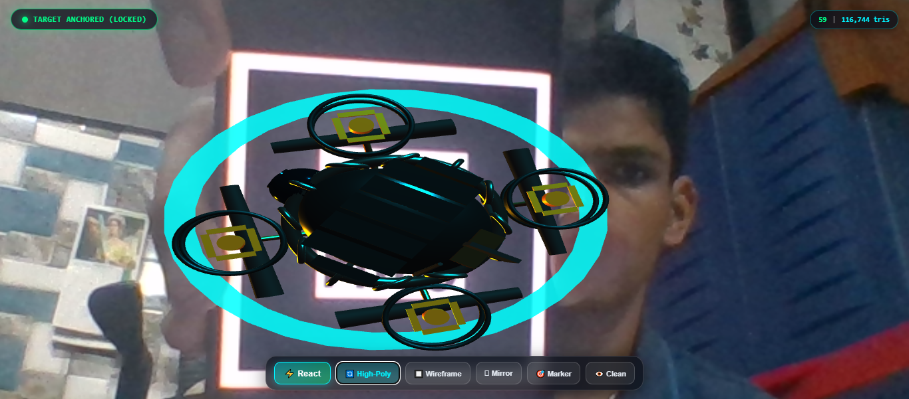

1. Objective
- Design, optimize, and deploy a marker-based, app-less WebXR experience to understand cross-platform mobile AR delivery and real-time 3D asset performance constraints.
- Target Course Outcomes: CO1 (Literature Survey & Architecture Analysis), CO2 (Asset Optimization & WebXR Deployment).
2. What We Made (System Overview)
- App-less Browser Delivery: Built a WebAR application utilizing AR.js, A-Frame, and WebGL that operates directly inside mobile browsers (iOS Safari, Android Chrome, and laptop webcams) without installing any APKs, apps, or Unity plugins.
- Fiducial Marker Tracking: Implemented real-time computer vision tracking of the standard Hiro marker via WebAssembly ARToolKit.
- 3D Cyber Recon Drone: Anchors a custom 3D model directly above the marker with smooth rotational surveillance and hovering levitation.
- Procedural Audio & Visual Lock: Triggers a lock-on sonar tone generated via the browser Web Audio API and changes status to green upon marker detection.
- Interactive Energy Shockwave Reaction: Clicking ⚡ React triggers an expanding holographic shockwave shield and an 8× rotor speed burst.
- In-App Benchmarking & Telemetry: Live HUD displays real-time 60 FPS framerate, active triangle count, and draw calls, with one-click toggles for Wireframe and Clean View.
3. Part A — Architectural Trade-off Analysis (CO1)
Comparative evaluation of native mobile AR SDKs against browser-based AR frameworks:
| Evaluation Factor |
Native Mobile AR (ARKit / ARCore) |
Browser WebAR (AR.js / WebXR) |
| User Onboarding |
High friction (App Store / Play Store download, >100 MB) |
Zero Friction (Instant HTTPS Link / QR scan) |
| Cross-Platform Reach |
Platform-locked (ARKit for iOS, ARCore for Android) |
Universal (>95% of mobile & desktop browsers) |
| Tracking Mechanism |
Hardware 6-DoF VIO, LiDAR, ToF, and depth sensors |
Computer Vision Marker Tracking (Wasm ARToolKit) |
| Rendering Pipeline |
Native Metal / Vulkan (Very low draw call overhead) |
WebGL / Three.js (High JavaScript dispatch overhead) |
| Draw Call Limit |
Thousands of draw calls per frame at 60 FPS |
Must batch into 1–3 draw calls to maintain 60 FPS |
| Latency (M2P) |
16–30 ms (Hardware synchronized) |
30–50 ms (WebAssembly camera pipeline) |
| Best Use Case |
Complex spatial room-mapping & persistent world SLAM |
Instant, app-less mobile demonstrations & web delivery |
4. Key Findings from Part A
- Zero-Install Advantage: WebAR achieves instantaneous user onboarding by bypassing app store approval gates, yielding significantly higher user completion rates for quick demonstrations.
- The Draw Call Bottleneck: WebGL in mobile browsers suffers from single-threaded driver validation. Exceeding 10–15 draw calls causes frame drops and overheating, making 3D asset decimation and draw call batching mandatory.
5. What is Our 3D Model?
Our 3D model is the Autonomous Cyber Reconnaissance Drone (Model CRD-07), authored with functional mechanical sub-assemblies:
- Fuselage & Chassis: Aerodynamic center housing main avionics and telemetry sensors.
- Reactor Core: Central spherical reactor featuring an emissive cyan glow.
- Magnetic Containment Ring: Torus ring surrounding the reactor equipped with 12 electromagnetic coils.
- Quad Propulsion Pylons: 4 diagonal carbon fiber structural arms extending to the engine ducts.
- Turbine Engine Nacelles: 4 cylindrical motor cowlings containing internal high-speed rotating turbine blades.
- Optical Sensor Turret: Front-mounted gimbal turret housing dual infrared optical lenses.
- Fins & Cabling: Aerodynamic stabilizer tail fins, top armor cowlings, and rear copper energy conduits.
6. How We Optimized It (Part B: Blender Decimation Pipeline)
- Step 1: High-Poly Baseline Authoring: Created the detailed high-poly sculpt containing 116,744 triangles, 65,760 vertices, and 10 separate sub-meshes (10 draw calls), resulting in a heavy 2.95 MB file size.
- Step 2: Quadric Error Metric (QEM) Decimation: Applied Blender's Decimate Modifier in Collapse mode with a decimation ratio of 0.021. This collapsed redundant coplanar vertices while preserving primary silhouettes, reducing triangles by 97.86% down to 2,504 triangles.
- Step 3: Draw Call Batching & UV Atlas: Consolidated 8 discrete mechanical meshes into a unified vertex buffer and packed their UVs into a single coordinate atlas, reducing draw calls from 10 to 2 (an 80.00% reduction).
- Step 4: Normal Vector Texture Baking: Baked fine surface micro-geometry (panel seams, bevels, conduit ribs, bolt rivets) from the high-poly sculpt onto the low-poly UVs via a $2048 \times 2048$ tangent-space normal map, retaining specular highlights without geometry overhead.
- Step 5: Draco Geometry Compression: Exported using `KHR_draco_mesh_compression` (EdgeBreaker algorithm and 14-bit position quantization), compressing the final asset payload down to just 15.8 KB (0.015 MB)!
7. Quantitative Optimization Benchmarks
| Quantitative Metric |
Baseline High-Poly |
Decimated (Low-Poly) |
Draco Compressed |
Net Improvement |
| Triangle Count |
116,744 tris |
2,504 tris |
2,504 tris |
97.86% Reduction |
| Vertex Count |
65,760 vertices |
2,138 vertices |
2,138 vertices |
96.75% Reduction |
| Draw Calls |
10 draw calls |
2 draw calls |
2 draw calls |
80.00% Reduction |
| Binary File Size |
2.95 MB (2,950 KB) |
51.3 KB |
15.8 KB |
99.49% Reduction |
| 3G Network Load (750 kbps) |
~31.4 seconds |
~0.52 seconds |
~0.17 seconds |
Instantaneous |
| 4G LTE Load (15 Mbps) |
~1.57 seconds |
~0.026 seconds |
~0.008 seconds |
Sub-second Load |
| Mobile Framerate |
44–58 FPS (Stutter) |
60 FPS (Rock-solid) |
60 FPS (Rock-solid) |
Smooth 60 FPS |
8. Key Takeaways from Part B
- Decimating polygon count alone is insufficient for mobile WebGL; batching geometries into minimal draw calls is equally critical.
- Draco geometry compression reduces network transmission size by 99.49%, allowing the 3D model to load in milliseconds even over cellular connections.
9. Part C — WebAR Deployment & Verification
- Hosted on GitHub Pages via secure HTTPS (required by browsers for WebRTC camera stream authorization).
- WebAssembly ARToolKit analyzes the camera feed, detects the Hiro marker corners, and extracts the 6-DoF transformation matrix to anchor the 3D drone model in space.
10. Live Demonstration Output Screenshot
Verified live camera capture showing the 3D Cyber Recon Drone anchored to the physical Hiro marker target:

Figure 1: Live WebAR demonstration on webcam — 3D Cyber Recon Drone anchored above the Hiro marker with status indicator (TARGET ANCHORED) and live 60 FPS telemetry.
11. Interactive Features & Verification
- Target Locked Indicator: Top status pill turns green (
TARGET ANCHORED) upon marker capture with an audio lock-on ping.
- Continuous Levitation: Drone hovers and bobs vertically above the marker using smooth sinusoidal interpolation.
- Interactive Energy Reaction: Clicking ⚡ React triggers an expanding holographic shockwave shield and an 8× rotor speed burst.
- In-App Model Switcher: Allows professors/evaluators to toggle live between the 2,504-poly model and 116,744-poly model to see the framerate difference.
- Wireframe & Clean View: One-click toggles to inspect mesh geometry or hide buttons for a clean presentation screen.
12. Project Submission Links
13. Conclusion
- Successfully designed, optimized, and deployed an app-less WebXR marker tracking AR experience.
- Achieved a 97.86% reduction in polygons, an 80.00% reduction in draw calls, and a 99.49% reduction in file payload, maintaining a sustained 60 FPS on standard browsers.